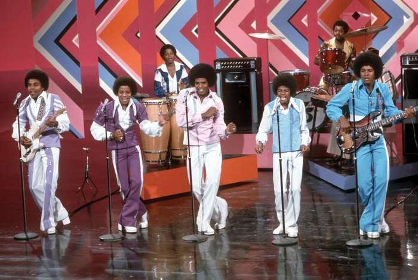

michael jackson
Michael Jackson, in full Michael Joseph Jackson or Michael Joe Jackson was an American singer, songwriter, and dancer who was the most popular entertainer in the world in the early and mid-1980s. Reared in Gary, Indiana, in one of the most acclaimed musical families of the rock era, Michael Jackson was the youngest and most talented of five brothers whom his father, Joseph, shaped into a dazzling group of child stars known as the Jackson 5. Under his father's encouragement, Jackson's career in music began at the age of 5. In addition to Michael, the members of the Jackson 5 were Jackie Jackson, Tito Jackson, Jermaine Jackson, and Marlon Jackson.
the jackson five
- In 1996, having been impressed by them, Motown Records president, Berry Gordy Jr, signed them. The Jackson 5 became an immediate success.
- They scored four consecutive number one pop hits with “I Want You Back,” “ABC,” “The Love You Save,” and “I’ll Be There” in 1970
- As Michael matured, his voice changed, family tensions arose, and a contract standoff ensued. The group finally broke with Motown, moving to Epic Records as the Jacksons.
- As a recording act, the Jacksons enjoyed consistent success through 1984, and their sister Janet Jackson embarked on her own singing career in the early 1980s; however, Michael’s solo albums took on an entirely different status.

Legacy
- At the age of 13, Jackson launched a solo career in addition to his work with the Jackson 5, making the charts in 1971 with "Got to Be There," from the album of the same name.
- Michael Jackson won a total of 13 Grammy awards in his lifetime
- In the 1980s, Jackson created a Southern California ranch called Neverland, a fantasy retreat for a shy and quiet performer who never was truly comfortable with media attention and rarely gave interviews.
- Set to appear at the O2 Arena in London, England, beginning July 8, 2009, Jackson saw all of the tickets to his "This Is It" tour sell out in only four hours. Sadly, Jackson would never get to experience the anticipated success of his comeback tour, as he died in June of that same year.
- Since his death, Jackson has been profiled in multiple biographies and inspired the creation of two Cirque du Soleil shows. He was posthumously honored with the 2018 Elizabeth Taylor AIDS Foundation Legacy Award for Humanitarian Service, with children Paris and Prince Michael accepting on his behalf.